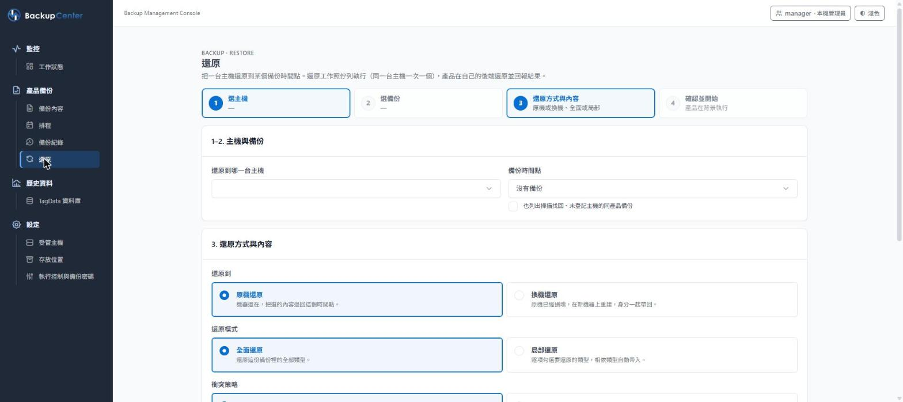

還原
把一台主機還原到某個備份時間點。還原工作照佇列執行，產品在自己的後端還原並回報結果。還原期間所有受管主機都會切到維護中；產品版本與備份版本不同時不允許還原。
還原前先了解的規則

- 回到快照
- 備份是定時快照，還原就回到備份當時的狀態；備份之後到故障之間的資料、Agent 緩衝或在途資料不在還原範圍。
- 全部停工
- 開始還原時，備份中心把所有受管主機切到「維護中」（停止收集、接收、寫入與修改），結束或失敗後切回原本的模式；原本就在維護中的維持維護中。
- 版本相同
- 主機目前的產品版本必須與備份版本相同，版本不同不允許還原；請先把產品裝成相同版本。
- 授權不在備份
- 換機還原後，新機器的授權請向原廠重新申請並啟用。
- 安排停機時段，通知使用者：還原期間 VL、DG、Agent 都不收集、不寫入。
- 確認有這份備份當時使用的備份密碼。
確認可以停工、版本一致、密碼在手，再開始還原。
還原會把選的內容退回備份時間點，之後的變更不會保留。
原機還原
- 「還原到哪一台主機」選主機；「備份時間點」選要回到的那一份（也可從「備份紀錄」按「還原」直接帶入）。
- 「還原到」選「原機還原」（機器還在，把選的內容退回這個時間點）。
- 「還原模式」選「全面還原」或「局部還原」，「衝突策略」選「覆蓋」或「僅新增資料」（見下兩節）。
- 輸入「備份密碼」。
- 看「還原期間所有受管主機切到維護中」清單，確認每台主機都連得上。
- 按「開始還原」。
畫面出現「還原進度」：每台主機的維護中狀態、進度與每一類資料的還原結果（完成、失敗、略過、筆數）；結束後主機切回原本的模式。
失敗時先查
- 顯示「版本不同，不能還原」：主機版本與備份版本不一致。
- 顯示「主機還沒準備好」：主機連不到或憑證錯誤，到第 9 章確認。
- 某台主機「連不到」無法切到維護中：先恢復連線；「開始還原」要等全部確認後才能按。
- 結束後顯示「仍在維護中」：到工作狀態按「重新切回運作中」（第 2 章）。
換機還原
- 新機器沿用原機的 IP 或主機名稱。
- 依產品準備新機器：
VL：全新安裝 VL，到「受管主機」更新這台的位址與 Backup API Token。
DG：在還原頁按「下載安裝設定包」，解壓到新機器的 DG 安裝目錄後執行 DG 安裝程式，再到「受管主機」確認位址與管理金鑰。
Agent：全新安裝 Agent，到「受管主機」把位址與管理金鑰更新成新安裝的值。 - 回到還原頁，選主機與備份時間點，「還原到」選「換機還原」，確認畫面顯示「新 VL／新 DG／新 Agent 已連上」；不是時按「重新檢查」。
- 選還原模式與衝突策略，輸入備份密碼。
- 舊主機已停機而連不到時，在維護中清單勾「這台已停機」（會記入稽核）。
- 按「開始還原」。
身分與設定帶回新機器：DG 換機後 Agent 不必改設定就會自動連回；Agent 換機後 DG 認得是同一台，即時值恢復更新。
換機用的備份必須包含「換機必要」的類型（完整或快速設定備份都有），否則換機後其他機器要重新設定或重新註冊。授權不在備份內，換機後請向原廠為新機器重新申請授權。
DG 換機的順序：先還原 DG 產品備份，再到「TagData 資料庫」還原 TagData；換機時「歷史保存設定」預設不勾，由 TagData 帶回。Agent 換機還原後，連線會先停用，切回運作中並確認授權後才啟用，結果附在還原工作上。
失敗時先查
- 顯示「尚未連上」：確認新機器的位址與憑證已在「受管主機」更新。
- DG 換機後 Agent 沒連回：確認新 DG 是用安裝設定包安裝，位址與原機相同。
局部還原
- 全面還原
- 還原這份備份裡的全部類型。
- 局部還原
- 逐項勾選要還原的類型，相依類型自動帶入。
- 「還原模式」選「局部還原」。
- 在資料類型清單勾選要還原的項目，至少一項。
只有勾選的類型（與相依類型）回到備份時間點，其他資料不動。
DG 做過 TagData 還原後，若再勾「歷史保存設定」，畫面會提醒 Tag 與保存分類會回到這份產品備份的時間，與 TagData 的時間點不一致。
失敗時先查
- 顯示「局部還原請至少勾選一項」：沒有勾選任何類型。
衝突策略
- 覆蓋
- 以備份為準，現有的同一筆資料會被蓋過。
- 僅新增資料
- 現有的保留，只補上備份裡有、現在沒有的。
- 需要完全回到備份時間點時選「覆蓋」。
- 只想找回被刪掉的資料、保留現有修改時選「僅新增資料」。
還原結果表的每一類會顯示完成、略過或失敗與筆數。
還原期間的維護中切換
- 開始前，清單列出每台受管主機目前是「運作中」或「維護中」；連不到的會標紅並寫原因，按「重新檢查」更新。
- 按「開始還原」後，備份中心依序把主機切到維護中，再執行還原。
- 還原完成或失敗後，備份中心把主機切回原本的模式。
還原期間沒有任何主機收集或寫入資料；結束後恢復原狀。
請勿在還原期間到產品管理畫面手動切回運作中。
失敗時先查
- 切不回去的主機：工作狀態「需要處理」會提示，確認連線後按「重新切回運作中」。